IWEvo
Производительность 5–40 м3/ч в стандартном исполненииУстановки обратного осмоса серии IW Evo для слабоминерализованной воды были разработаны для удовлетворения нужд наиболее требовательных к качеству воды промышленных и коммунальных потребителей.Предлагается 7 моделей, покрывающих диапазон производительности от 5 до 40 м3/ч (от 22 до 176 галл./мин) и способных обрабатывать воду с соленостью до 3000 частей на миллион (полная минерализация).
IWEvo
Производительность 5–40 м3/ч в стандартном исполненииУстановки обратного осмоса серии IW Evo для слабоминерализованной воды были разработаны для удовлетворения нужд наиболее требовательных к качеству воды промышленных и коммунальных потребителей.Предлагается 7 моделей, покрывающих диапазон производительности от 5 до 40 м3/ч (от 22 до 176 галл./мин) и способных обрабатывать воду с соленостью до 3000 частей на миллион (полная минерализация).
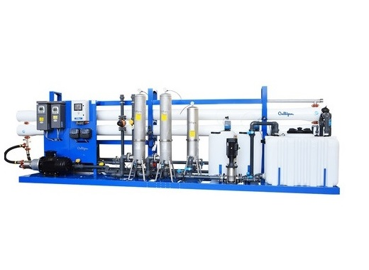
Разработанная специально для опреснения морской воды, установка обратного осмоса (ОО) SW способна обрабатывать воду с соленостью до 42 000 частей на миллион.Установка изготовлена из полностью коррозионно-стойких материалов, таких как дуплексная нержавеющая сталь, и размещена на раме, что облегчает установку на берегу или в море.
PDF
SW Evo
Производительность до 40 м3/ч.Разработанная специально для опреснения морской воды, установка обратного осмоса (ОО) SW способна обрабатывать воду с соленостью до 42 000 частей на миллион.Установка изготовлена из полностью коррозионно-стойких материалов, таких как дуплексная нержавеющая сталь, и размещена на раме, что облегчает установку на берегу или в море.
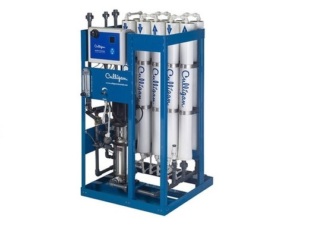
PDF
Водяные системы обратного осмоса G2
Производительность 0,63 - 3 м3 / с. Распределяет 2500 ppm общего количества растворенных твердых веществ (TDS). Более 98% ацетатных солей. Для деминерализации воды, насыщенной минералами, Culligan предлагает лучшую технологию для систем обратного осмоса. G2 используется для коммерческих, промышленных и муниципальных нужд.
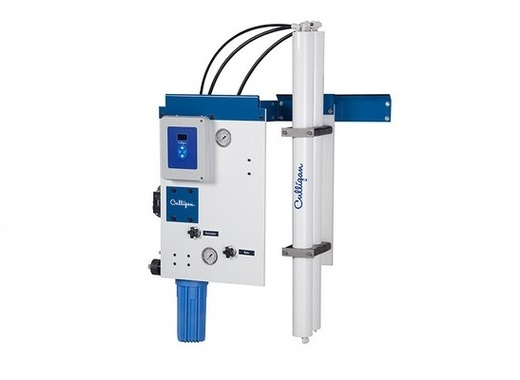
Система G1 RO – это компактная система ОО, предназначенная для применения в высокоэффективных коммерческих сферах и лёгкой промышленности. Оборудована цифровым расходомером на выгрузке продукта, манометрами для управления давлением на входе и выходе, интерактивной контрольно-измерительной аппаратурой для контроля качества произведённой воды и коэффициентов извлечения и высокоэффективными мембранами обратного осмоса
PDF
Водяные системы обратного осмоса G1
Расход 0,04 – 0,35 м3/чСистема G1 RO – это компактная система ОО, предназначенная для применения в высокоэффективных коммерческих сферах и лёгкой промышленности. Оборудована цифровым расходомером на выгрузке продукта, манометрами для управления давлением на входе и выходе, интерактивной контрольно-измерительной аппаратурой для контроля качества произведённой воды и коэффициентов извлечения и высокоэффективными мембранами обратного осмоса
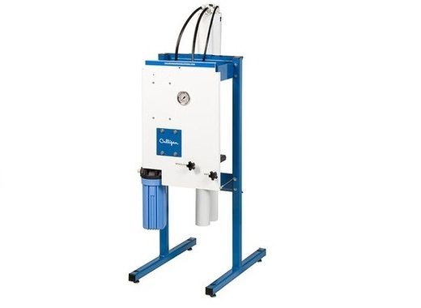
E1 поможет снизить расходы на эксплуатационно-техническое обслуживание через снижение количества загрязнителей в воде, которые влияют на вкус и могут засорять оборудование
PDF
Водяные системы обратного осмоса E1
Расход 0,04 – 0,35 м3/чE1 поможет снизить расходы на эксплуатационно-техническое обслуживание через снижение количества загрязнителей в воде, которые влияют на вкус и могут засорять оборудование
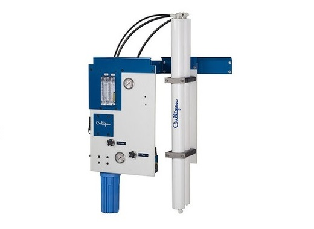
Система M1 RO с расширенными функциями предназначена для коммерческих сфер применения, в которых требуются максимальные расходы 350 литров в час. Система монтируется либо на стене, либо поставляется с напольной подставкой. Система M1 оборудована фильтром предварительной очистки от осадка, расходомерами и манометрами для управления входным давлением и выпуском. Эта установка управляется панелью управления Culligan CP.
PDF
Водяные системы обратного осмоса M1
Расход 0,04 – 0,35 м3/чСистема M1 RO с расширенными функциями предназначена для коммерческих сфер применения, в которых требуются максимальные расходы 350 литров в час. Система монтируется либо на стене, либо поставляется с напольной подставкой. Система M1 оборудована фильтром предварительной очистки от осадка, расходомерами и манометрами для управления входным давлением и выпуском. Эта установка управляется панелью управления Culligan CP.

Aqua-Cleer Advanced
Для частного применения.Устраняет хлор и его канцерогенные побочные эффекты, а также механические примеси, песок, осадок, ил, глину и другие вредные примеси.
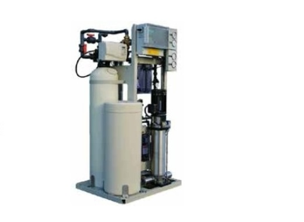
PDF
AquaCleer SB 200 - интегрированная система предварительной очистки и ОО
Расход 1,5 м3/ч умягчённой воды – 0,2 м3/ч ОО-воды. Aqua-Cleer SB 200 Идеальна для установки на предприятиях общественного питания, требующих умягчённой воды для некоторых сфер применения – таких как посудомоечные машины, и обратного осмоса для приготовления напитков
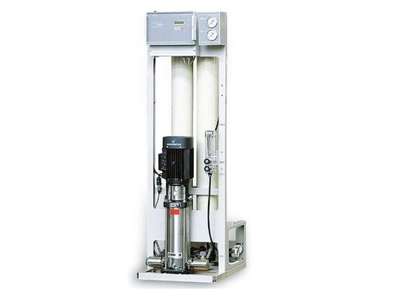
MFP является идеальным решением по питьевой воде и промышленным технологиям в любом месте расположения. Система управляется через электронную панель управления, которая следит за всеми эксплуатационными условиями и выводит на дисплей расход, проводимость и прочие эксплуатационные параметры.
PDF
Culligan MFP - обратный осмос (ОО) для средних расходов
Расход 0,4 – 3,6 м3/чMFP является идеальным решением по питьевой воде и промышленным технологиям в любом месте расположения. Система управляется через электронную панель управления, которая следит за всеми эксплуатационными условиями и выводит на дисплей расход, проводимость и прочие эксплуатационные параметры.
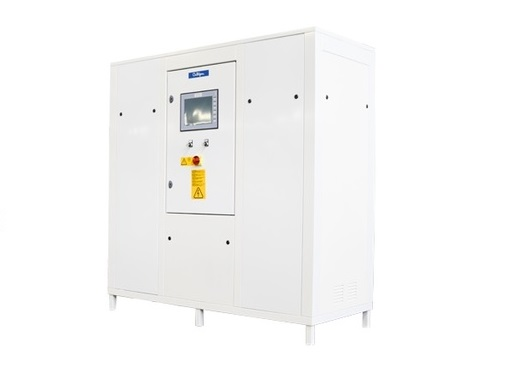
PDF
Установка подготовки воды для гемодиализа RO2 MD BiO E
Система Bi-Osmosis гарантирует безопасность, так как в маловероятном случае отказа одной из двух систем обратного осмоса вторая система продолжит работать, непрерывно обеспечивая подачу безопасной высококачественной воды.Кроме обеспечения безопасности и надежности в систему подготовки воды для гемодиализа Culligan R.O.2 заложена задача уменьшения расхода воды и достижения максимальной энергоэффективности, что поможет экономить средства и снизить воздействие на окружающую среду.
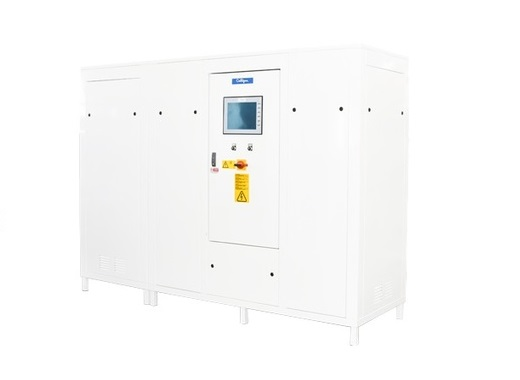
PDF
Установка подготовки воды для диализа RO2 MD BiO THERMO
Для значений производительности до 3200 л/ч. Установка RO2 Thermo использует встроенную систему тепловой санитарной обработки для уничтожения бактерий и вирусов, что уменьшает или полностью устраняет необходимость в использовании химических дезинфицирующих средств.
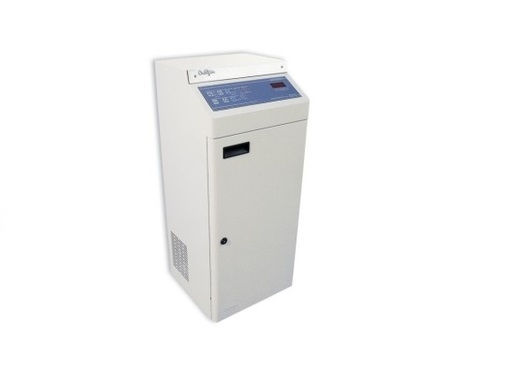
Система SDS производит до 80 л/ч качественной воды обратного осмоса для использования в гемодиализе. Установка идеально подходит для таких сфер применения, как домашнее лечение пациента, использование в экстренных службах, диализ в случае обострений и для трансплантологических пациентов.
PDF
SDS RO - Одинарная система диализа
Расход 80 л/чСистема SDS производит до 80 л/ч качественной воды обратного осмоса для использования в гемодиализе. Установка идеально подходит для таких сфер применения, как домашнее лечение пациента, использование в экстренных службах, диализ в случае обострений и для трансплантологических пациентов.
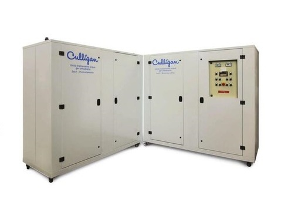
PDF